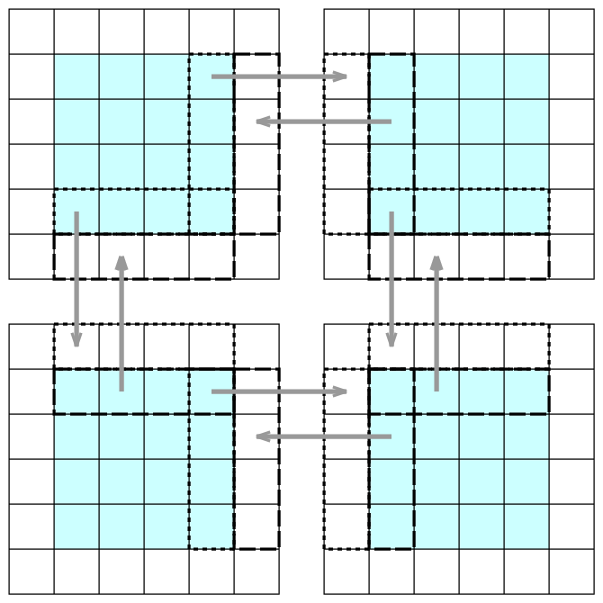

High-level parallel stencil computations
… on CPUs and GPUs in Julia
Abstract: In this webinar, we cover parallel stencil computations in Julia using the ParallelStencil.jl package. This package enables you to write high-level code for fast computations on CPUs and GPUs. These computations are common in all numerical simulations involving the solution of discretized partial differential equations (PDEs) on a grid. ParallelStencil.jl provides high-level functions for computing derivatives and updating arrays. You can execute the same code on a single CPU, multiple CPUs with multithreading via Base.Threads, or on GPUs using either CUDA.jl (NVIDIA GPUs), AMDGPU.jl (AMD GPUs), or Metal.jl (Apple Silicon GPUs).
Regardless of the underlying parallel hardware, all low-level communication between threads is hidden behind ParallelStencil.jl’s macro calls, ensuring that it remains invisible in the simulation code. This framework makes it highly accessible to domain scientists. The same high-level code can seamlessly run on CPUs and GPUs without any modifications.
Furthermore, you can extend this framework to multiple processes, integrating ParallelStencil.jl with ImplicitGlobalGrid.jl (built upon MPI.jl). This combination facilitates easy scaling to multiple cluster nodes, with further parallelization on multiple cores and GPUs on each node. This architecture has been shown to scale efficiently to hundreds of GPUs and hundreds of cluster nodes.
ParallelStencil.jl basics
I will start the demo on my laptop’s GPU:
using ParallelStencil
@init_parallel_stencil(Metal, Float32, 3); # creates Data module with all the correct types
Data.Number # Float32
Data.Array # Metal.MtlArray{Float32}The call to @init_parallel_stencil creates Data module for the selected parallel method, precision and dimensionality, with Data.Number, Data.Array, Data.CellArray inside.
- 1st argument specifies your parallel package: Threads, Polyester, CUDA, AMDGPU, or Metal
- 2nd argument specifies precision: Float16, Float32, Float64, ComplexF16, ComplexF32, or ComplexF64
- Int not supported by design, as we are solving PDEs
- for demos I’ll be using
...f0and Float32 to enforce single precision, as double precision is not supported in Metal.jl
- 3rd argument specifies dimensionality for the stencil computations: 1, 2, or 3
You can initialize Data.Array objects via @zeros, @ones, @rand, @fill, e.g.
n = 5;
A = @zeros(n, n, n);
typeof(A) # Metal.MtlArray{Float32, 3, Metal.PrivateStorage}, or Array{Float32, 3}, or ...or by converting from Julia’s usual arrays:
B = [i+j for i=1:5, j=1:5, k=1:n] # array comprehension
typeof(B) # usual Julia's 2D Matrix{Int64} = Array{Int64, 2}
size(B) # (5, 5, 5)
A = Data.Array(B)
typeof(A) # MtlMatrix{Float32, Metal.PrivateStorage}You can also take an initialized Data.Array and assign to it element-wise from another Data.Array:
n = 5;
A = @zeros(n, n, n);
A .= 0.1f0 .+ Data.Array([i+j+k for i=1:n, j=1:n, k=1:n]);
size(A) # (5, 5, 5)
A[1:3,1:3,1:3] # you can use the usual subsettingParallel stencil processing
Let’s switch to 2D (need to restart Julia!) and try some parallel stencil calculations.
using ParallelStencil
@init_parallel_stencil(Metal, Float32, 2); # create Data module with all the correct types
using ParallelStencil.FiniteDifferences2D # also 1D and 3D available
?@inn # select the inner elements of AYou cannot just say @inn(A) in the main scope – instead you need to use it from a parallel function (that would launch a GPU kernel if running on a GPU):
@parallel function inner!(A, B)
@inn(B) = @inn(A);
return
end- our function will launch a GPU kernel (if running on a GPU)
- the last statement must be
returnorreturn nothingornothing - @parallel must contain only array assignments using macros from FiniteDifferences{1|2|3}D
- @parallel_indices supports any kind of statements in the kernels (less efficient)
This is how you would use it:
n = 4;
A = Data.Array([i+j for i=1:n, j=1:n])
B = @zeros(n, n);
@parallel inner!(A, B)
B4×4 Metal.MtlMatrix{Float32, Metal.PrivateStorage}:
0.0 0.0 0.0 0.0
0.0 4.0 5.0 0.0
0.0 5.0 6.0 0.0
0.0 0.0 0.0 0.0Now let’s assign to all elements of B with @all(B) by redefining a new parallel function:
This last example works on Metal but breaks on Threads, for the reasons that will become clear in a minute.
@parallel function inner2all!(A, B)
@all(B) = @inn(A);
return
end
B = @zeros(n, n);
@parallel inner2all!(A, B)
B4×4 Metal.MtlMatrix{Float32, Metal.PrivateStorage}:
4.0 5.0 6.0 0.0
5.0 6.0 7.0 0.0
6.0 7.0 8.0 0.0
4.0 5.0 0.0 0.0It starts by doing the right thing (copying the inner elements A at the start of B), but then it keeps going past the end of @inn(A) in y-dimension:
Array()copy a GPU Data.Array to a CPU
Array(B)[1,3] == Array(A)[2,4]
Array(B)[2,3] == Array(A)[3,4]
Array(B)[3,3] == Array(A)[4,4]and then wraps around into the x-dimension with a shift in y-dimension:
Array(B)[4,1] == Array(A)[1,3] # true
Array(B)[4,2] == Array(A)[1,4] # trueTo me, this is counter-intuitive – I would prefer for it to copy zeros into these last 5 elements – but I guess it makes sense from the performance standpoint, especially on a GPU (where you want to keep things simple), as it just keep incrementing the memory indices. This means that you as a programmer have to be careful when assigning a smaller array to a larger array with these parallel constructs on a GPU, or even better never do this!
First-order derivatives
Let’s compute a 1st-order derivative in x-direction:
?@d_xa # compute differences between adjacent elements of A along the x-dimension
@parallel function ddx!(A, B, h)
@inn(B) = @d_xa(A) / h;
return
end
n = 4
h = 1f0/(n-1); # Float32
A = @rand(n,n)
B = @zeros(n, n);
@parallel ddx!(A, B, h);
BAs expected, this code results only in the inner elements of B getting assigned the derivatives:
4×4 Metal.MtlMatrix{Float32, Metal.PrivateStorage}:
0.0 0.0 0.0 0.0
0.0 0.385376 -1.69729 0.0
0.0 1.13448 0.613478 0.0
0.0 0.0 0.0 0.0Upon closer examination, the first non-zero derivative element turns out to be:
Array(B)[2,2] == (Array(A)[2,1]-Array(A)[1,1]) / h # truei.e. we get a weird derivative B[i,j] == (A[i,j-1] - A[i-1,j-1]) / h.
To get the backward Euler derivative B[i,j] == (A[i,j] - A[i-1,j]) / h, you can use:
@d_xi(A): Compute differences between adjacent elements of A along the
dimension x and select the inner elements of A in the remaining dimension.
Corresponds to @inn_y(@d_xa(A)).@parallel function ddx!(A, B, h)
@inn(B) = @d_xi(A) / h;
return
end
B = @zeros(n, n);
@parallel ddx!(A, B, h);
B
Array(B)[2,2] == (Array(A)[2,2]-Array(A)[1,2]) / h # trueTo get the forward Euler derivative B[i,j] == (A[i+1,j] - A[i,j]) / h, on a GPU (breaks on Threads) you could use:
@parallel function ddx!(A, B, h)
@all(B) = @d_xa(A) / h;
return
end
B = @zeros(n, n);
@parallel ddx!(A, B, h);
B
C = Array(A)
[Array(B)[i,j] == (C[i+1,j] - C[i,j]) / h for i=2:n-1, j=2:n-1] # array of 1==truealong with setting the proper boundary conditions, as assigning to @all will give you weird “wrap-around” derivatives along the edges as we saw earlier.
Second-order derivatives
Let’s compute the Laplacian of a Gaussian function centred on (0.5, 0.5):
@parallel function laplacian!(A, B, h)
@inn(B) = (@d2_xi(A) + @d2_yi(A))/h^2;
return
end
n = 5;
h = 1f0/(n-1); # Float32
A = Data.Array([exp(-2*(((i-0.5)/n-0.5)^2+((j-0.5)/n-0.5)^2)) for i=1:n, j=1:n])
B = @zeros(n, n);
@parallel laplacian!(A, B, h);
B
# check (should all return true)
C = Array(A)
for i=2:n-1
for j=2:n-1
println(i, " ", j, " ",
isapprox(Array(B)[i,j], (C[i-1,j]-2*C[i,j]+C[i+1,j])/h^2 + (C[i,j-1]-2*C[i,j]+C[i,j+1])/h^2))
end
endPlotting a 2D array
Makie package can plot a 2D array:
n = 100
h = 1.0f0/(n-1); # Float32
A = Data.Array([exp(-2*(((i-0.5)/n-0.5)^2+((j-0.5)/n-0.5)^2)) for i=1:n, j=1:n]);
B = @zeros(n, n);
@parallel laplacian!(A, B, h);
B
cpuArray = Array(B); # only needed if running on a GPU
using CairoMakie
fig = Figure(resolution=(3*size(cpuArray)[1]+100, 3*size(cpuArray)[2]+100))
ax = Axis(fig[1, 1], xlabel = "x", ylabel = "y", title = "Laplacian")
heatmap!(ax, cpuArray, colormap = :viridis)
save("laplacian.png", fig)2D and 3D heat diffusion solver
In this demo we’ll be solving the equation \(\partial T/\partial t = \nabla^2 T\) on a 2D grid.
Let’s study the code heatDiffusionSolver2D.jl:
- two explicit switch variables USE_GPU and ANIMATION
- dual Gaussian initial state
- zero boundary at the left/right sides
- non-zero boundary at the top and bottom
const USE_GPU = true
const ANIMATION = true
using ParallelStencil
using ParallelStencil.FiniteDifferences2D
using CairoMakie
using Printf
@static if USE_GPU
@init_parallel_stencil(Metal, Float32, 2);
else
@init_parallel_stencil(Threads, Float32, 2);
end
@parallel function computeNewTemperature!(Tnew, T, dt, h)
@inn(Tnew) = @inn(T) + dt*(@d2_xi(T)/h^2 + @d2_yi(T)/h^2);
return
end
@parallel function updateCurrentTemperature!(Tnew, T)
@inn(T) = @inn(Tnew)
return
end
function plotArray(A, counter)
fig = Figure(size=(size(A)[1]+100, size(A)[2]+100))
ax = Axis(fig[1, 1], title = "Heat diffusion")
heatmap!(ax, A, colormap = :viridis)
save("frame"*@sprintf("%05d", counter)*".png", fig)
return
end
function diffusion2D()
n, nt, nout = 8192, 100, 10; # resolution, max time steps, plotting frequency
h = 1f0 / (n-1); # grid step
# initial conditions
T = Data.Array([100f0 * exp(-30*(((i-1)*h-0.5)^2+((j-1)*h-0.5)^2)) +
100f0 * exp(-15*(((i-1)*h-0.25)^2+((j-1)*h-0.25)^2)) for i=1:n, j=1:n]);
Tnew = @zeros(n, n);
# boundary conditions
T[1,:] .= 0f0; # left
T[n,:] .= 0f0; # right
T[:,n] .= 80f0; # non-zero boundary at the top
T[:,1] .= 80f0; # non-zero boundary at the bottom
ANIMATION && plotArray(Array(T), 0); # Array() converts to a CPU array
dt = h^2 / 4f0; # Courant condition: h^2/4 for 2D, h^2/6 for 3D
@time for it = 1:nt
# need two separate steps so that we finish computing Tnew before updating T
@parallel computeNewTemperature!(Tnew, T, dt, h);
@parallel updateCurrentTemperature!(Tnew, T);
if mod(it,nout)==0
ANIMATION && plotArray(Array(T), Int32(it/nout));
println(it, " ", sum(T))
end
end
end
diffusion2D();First, let’s run this problem with the following parameters:
const USE_GPU = true
const ANIMATION = true
n, nt, nout = 500, 50_000, 100; # resolution, max time steps, plotting frequencyjulia heatDiffusionSolver2D.jlThe animation gaussian.mp4 with 501 frames.
2D benchmarking
This 2D problem runs very fast. Let’s increase the resolution to \(8192^2\) and run on CPU without animation:
const USE_GPU = false
const ANIMATION = false
n, nt, nout = 8192, 100, 10; # resolution, max time steps, plotting frequencyjulia heatDiffusionSolver2D.jl
julia -t 2 heatDiffusionSolver2D.jl
...- 17.51 seconds on 1 CPU core
- 9.08 seconds on 2 CPU cores
- 4.73 seconds on 4 CPU cores
- 3.28 seconds on 6 CPU cores
- 3.93 seconds on 8 CPU cores
Moving to the M1 GPU gives a small speed-up:
const USE_GPU = true- 3.32 seconds on M1’s GPU
If we add cpuArray = Array(T); println(cpuArray[2,2]); line right after calling the two GPU functions, the runtime grows to 5.72 seconds reflecting data transfer from GPU to CPU (and printing).
3D benchmarking
Copy the 2D code heatDiffusionSolver2D.jl to heatDiffusionSolver3D.jl and make the following changes:
< using ParallelStencil.FiniteDifferences2D
---
> using ParallelStencil.FiniteDifferences3D
< @init_parallel_stencil(Metal, Float32, 2);
---
> @init_parallel_stencil(Metal, Float32, 3);
< @init_parallel_stencil(Threads, Float32, 2);
---
> @init_parallel_stencil(Threads, Float32, 3);
< @inn(Tnew) = @inn(T) + dt*(@d2_xi(T)/h^2 + @d2_yi(T)/h^2);
---
> @inn(Tnew) = @inn(T) + dt*(@d2_xi(T)/h^2 + @d2_yi(T)/h^2 + @d2_zi(T)/h^2);
< function diffusion2D()
< n, nt, nout = 8192, 100, 10; # resolution, max time steps, plotting frequency
---
> function diffusion3D()
> n, nt, nout = 512, 100, 10; # resolution, max time steps, plotting frequency
< diffusion2D();
---
> diffusion3D();
< T = Data.Array([100f0 * exp(-30*(((i-1)*h-0.5)^2+((j-1)*h-0.5)^2)) +
< 100f0 * exp(-15*(((i-1)*h-0.25)^2+((j-1)*h-0.25)^2)) for i=1:n, j=1:n]);
---
> T = Data.Array([100f0 * exp(-30*(((i-1)*h-0.5)^2+((j-1)*h-0.5)^2+((k-1)*h-0.5)^2)) +
> 100f0 * exp(-15*(((i-1)*h-0.25)^2+((j-1)*h-0.25)^2+((k-1)*h-0.25)^2)) for i=1:n, j=1:n, k=1:n]);
< Tnew = @zeros(n, n);
---
> Tnew = @zeros(n, n, n);
< T[1,:] .= 0f0; # left
< T[n,:] .= 0f0; # right
< T[:,n] .= 80f0; # non-zero boundary at the top
< T[:,1] .= 80f0; # non-zero boundary at the bottom
---
> T[1,:,:] .= 0f0; # left
> T[n,:,:] .= 0f0; # right
> T[:,n,:] .= 80f0; # non-zero boundary at the top
> T[:,1,:] .= 80f0; # non-zero boundary at the bottom
> T[:,:,1] .= 0f0;
> T[:,:,n] .= 0f0;
< ANIMATION && plotArray(Array(T), 0); # Array() converts to a CPU array
---
> ANIMATION && plotArray(Array(T[:,:,Int32(n/2)]), 0); # Array() converts to a CPU array
< dt = h^2 / 4f0; # Courant condition: h^2/4 for 2D, h^2/6 for 3D
---
> dt = h^2 / 6f0; # Courant condition: h^2/4 for 2D, h^2/6 for 3D
< ANIMATION && plotArray(Array(T), Int32(it/nout));
---
> ANIMATION && plotArray(Array(T[:,:,Int32(n/2)]), Int32(it/nout));On my laptop, at \(512^3\) I get the following runtimes:
- 46.51 seconds on 1 CPU core
- 23.99 seconds on 2 CPU cores
- 12.47 seconds on 4 CPU cores
- 9.71 seconds on 8 CPU cores
- 6.88 seconds on the GPU
3D benchmarking on a cluster
Setting up Julia with CUDA may require some work – you can find more information at https://docs.alliancecan.ca/wiki/Julia#Using_GPUs_with_Julia
Here is what worked for me on the training cluster on Arbutus:
sed -i -e 's|Metal|CUDA|' heatDiffusionSolver3D.jl
module load gcc/13.3
module load cudacore/.12.2.2
module load julia/1.10.0
julia
]
add ParallelStencil # goes into ~/.julia; 11 dependencies
add CairoMakie # optional; takes a while; 222 dependencies
backspace
exit()
salloc --time=3:0:0 --mem-per-cpu=15000 --gpus-per-node=1
julia
]
add CUDA # do this from a GPU node; 33+235 dependencies
backspace
using CUDA
CUDA.set_runtime_version!(v"12.2.2", local_toolkit=true) # configure Julia to use the local CUDA
exit()
julia
using CUDA
CUDA.versioninfo()The last command will report the device (GRID V100D-8C) and the software versions for NVIDIA drivers, CUDA libraries, Julia, and LLVM. When running CUDA codes, if you will get warnings:
Warning: You are using a non-official build of Julia.
This may cause issues with CUDA.jl.but things seem to run Ok.
Go back on the login node, copy heatDiffusionSolver3D.jl to the cluster and set:
USE_GPU = falseRun the code with Base.Threads:
salloc --time=0:15:0 --mem-per-cpu=3600 --cpus-per-task=4
julia heatDiffusionSolver3D.jl
julia -t 2 heatDiffusionSolver3D.jl
julia -t 4 heatDiffusionSolver3D.jland then with CUDA:
sed -i -e 's|USE_GPU = false|USE_GPU = true|' heatDiffusionSolver3D.jl
salloc --time=0:15:0 --mem-per-cpu=3600 --gpus-per-node=1
nvidia-smi # running on V100D-8C
julia heatDiffusionSolver3D.jlAt \(512^3\) I get the following runtimes:
- 140.9 seconds on 1 CPU core
- 72.59 seconds on 2 CPU cores
- 37.24 seconds on 4 CPU cores
- 2.97 seconds on the GPU
3D acoustic wave solver
Our next demo code, adapted from https://github.com/omlins/ParallelStencil.jl, solves the 3D acoustic wave equation for \(c=1\) (speed of sound), written as a system separately for velocity and pressure:
\[ \begin{cases} \partial\vec{v}/\partial t = -\nabla p\\\ \partial p/\partial t = -\nabla\cdot\vec{v} \end{cases} \]
Let’s take a look at the code in acoustic3D.jl!
To run it:
julia acoustic3D.jl # 16m4s seconds on M1's GPUThe movie advection.mp4 shows the numerical solution.
Distributed parallelization (multi-node)
For distributed-memory parallelism, ParallelStencil.jl can interoperate with 3rd-party frameworks to parallelize array computations on many processes. While it might be possible to run ParallelStencil.jl alongside DistributedArrays.jl or SharedArrays.jl, these packages use specialized data structures that are not directly portable to ParallelStencil.jl’s parallel frameworks. A better approach is combining ParallelStencil.jl with ImplicitGlobalGrid.jl, which provides implicit distributed arrays built out of regular local arrays on each MPI rank.
Intro to ImplicitGlobalGrid.jl
Let’s study the code globalGridDemo.jl:
- using formatted
@printfinstead ofprintlnas it separates output from different ranks into different lines;printlntends to mix them somewhere in the output buffers somewhat randomly - by default,
init_global_gridwill initialize MPI andfinalize_global_gridwill finalize MPI; here doing this by hand, as we might want to runtest()many times, and MPI can be initialized only once - our computational domain is a unit square
- there is no global array per se, in the sense provided by such packages as
DistributedArrays.jlandSharedArrays.jl– instead, local arrays cover the domain with some overlap at the inner boundaries, and together they emulate a global grid; you can only explicitly read/write array elements on the processor rank where these elements are hosted in the respective local array nx_g(),ny_g(),nz_gprovide the global grid size (cumulative over all local arrays minus the borders)- based on the current processor rank:
[x_g(i, dx, A) for i in 1:nx]gives the global x-coordinates of all elements in the local arrayA[y_g(j, dy, A) for j in 1:ny]gives the global y-coordinates of all elements in the local arrayA[z_g(k, dz, A) for k in 1:nz]gives the global z-coordinates of all elements in the local arrayA
- on each rank we compute only the internal array elements
[2:end-1]in each dimension - the inner boundary zones are updated via MPI, by calling
update_halo! - the outer boundary zones are not updated in this example at all; in a real problem they will be used for outer boundary conditions

using ImplicitGlobalGrid
using MPI
using Printf
MPI.Init() # finalize by hand, as we want to run test() many times,
# and MPI can be initialized only once
function test()
nx, ny, nz= 5, 5, 1; # must be 3D
# initialize a Cartesian grid of MPI processes, each computing an (nx, ny, nz) array
me, dims, nprocs, coords, comm_cart = init_global_grid(nx, ny, nz, init_MPI=false);
@printf("me=%d nprocs=%d dims=%s coords=%s\n", me, nprocs, string(dims), string(coords))
me == 0 && @printf("global grid size = %d %d %d\n", nx_g(), ny_g(), nz_g())
dx = 1/(nx_g()-1);
dy = 1/(ny_g()-1);
A = fill(-1f0, nx, ny);
# x,y,z-coordinates of the first and last local elements
@printf("me=%d >> from %f %f to %f %f\n", me,
x_g(1,dx,A), y_g(1,dy,A),
x_g(nx,dx,A), y_g(ny,dy,A));
A[2:end-1,2:end-1] = [
exp(-10*((x_g(i,dx,A)-0.4)^2+(y_g(j,dy,A)-0.4)^2))
for i=2:nx-1, j=2:ny-1];
sleep(0.25*me)
if me == 1 || me ==3
print(" ");
end
display(A);
update_halo!(A);
me == 0 && println("----------");
sleep(0.25*me)
display(A);
finalize_global_grid(finalize_MPI=false);
end
test()
MPI.Finalize()Running this code on 4 cores:
export PATH=$PATH:$HOME/.julia/packages/MPI/TKXAj/bin
unalias julia
export PATH=$PATH:/Applications/Julia-1.11.app/Contents/Resources/julia/bin
mpiexecjl -n 4 julia globalGridDemo.jlwill produce the following output:
me=1 nprocs=4 dims=[2, 2, 1] coords=[0, 1, 0]
me=0 nprocs=4 dims=[2, 2, 1] coords=[0, 0, 0]
me=3 nprocs=4 dims=[2, 2, 1] coords=[1, 1, 0]
me=2 nprocs=4 dims=[2, 2, 1] coords=[1, 0, 0]
global grid size = 8 8 1
me=1 >> from 0.000000 0.428571 to 0.571429 1.000000
me=3 >> from 0.428571 0.428571 to 1.000000 1.000000
me=2 >> from 0.428571 0.000000 to 1.000000 0.571429
me=0 >> from 0.000000 0.000000 to 0.571429 0.571429
5×5 Matrix{Float32}:
-1.0 -1.0 -1.0 -1.0 -1.0
-1.0 0.266482 0.453012 0.512022 -1.0
-1.0 0.453012 0.770108 0.870423 -1.0
-1.0 0.512022 0.870423 0.983806 -1.0
-1.0 -1.0 -1.0 -1.0 -1.0
5×5 Matrix{ Float32}:
-1.0 -1.0 -1.0 -1.0 -1.0
-1.0 0.384773 0.192246 0.0638627 -1.0
-1.0 0.654103 0.326813 0.108565 -1.0
-1.0 0.739308 0.369384 0.122707 -1.0
-1.0 -1.0 -1.0 -1.0 -1.0
5×5 Matrix{Float32}:
-1.0 -1.0 -1.0 -1.0 -1.0
-1.0 0.384773 0.654103 0.739308 -1.0
-1.0 0.192246 0.326813 0.369384 -1.0
-1.0 0.0638627 0.108565 0.122707 -1.0
-1.0 -1.0 -1.0 -1.0 -1.0
5×5 Matrix{Float32}:
-1.0 -1.0 -1.0 -1.0 -1.0
-1.0 0.555573 0.277584 0.0922112 -1.0
-1.0 0.277584 0.138691 0.0460719 -1.0
-1.0 0.0922112 0.0460719 0.0153048 -1.0
-1.0 -1.0 -1.0 -1.0 -1.0
----------
5×5 Matrix{Float32}:
-1.0 -1.0 -1.0 -1.0 -1.0
-1.0 0.266482 0.453012 0.512022 0.384773
-1.0 0.453012 0.770108 0.870423 0.654103
-1.0 0.512022 0.870423 0.983806 0.739308
-1.0 0.384773 0.654103 0.739308 0.555573
5×5 Matrix{Float32}:
-1.0 -1.0 -1.0 -1.0 -1.0
0.512022 0.384773 0.192246 0.0638627 -1.0
0.870423 0.654103 0.326813 0.108565 -1.0
0.983806 0.739308 0.369384 0.122707 -1.0
0.739308 0.555573 0.277584 0.0922112 -1.0
5×5 Matrix{Float32}:
-1.0 0.512022 0.870423 0.983806 0.739308
-1.0 0.384773 0.654103 0.739308 0.555573
-1.0 0.192246 0.326813 0.369384 0.277584
-1.0 0.0638627 0.108565 0.122707 0.0922112
-1.0 -1.0 -1.0 -1.0 -1.0
5×5 Matrix{Float32}:
0.983806 0.739308 0.369384 0.122707 -1.0
0.739308 0.555573 0.277584 0.0922112 -1.0
0.369384 0.277584 0.138691 0.0460719 -1.0
0.122707 0.0922112 0.0460719 0.0153048 -1.0
-1.0 -1.0 -1.0 -1.0 -1.0In each subdivided dimension we have two overlapping elements, one on each side of the boundary. Running update_halo!(A) copies the array elements (via MPI) into the ghost values across the boundary.
Extending the 2D heat diffusion solver to multiple MPI ranks
Copy the 2D code heatDiffusionSolver2D.jl to distrubuted2D.jl and make the following changes:
- set
USE_GPU = false(we’ll be solving on multiple MPI ranks, each with one CPU – no GPUs for now) - remove animation to keep the code compact (some extra work needed to animate multiple local arrays)
- we are solving the equation on the same physical domain (unit square); assuming fixed local array size, the global grid resolution depends on the number of ranks stacked in each dimension, so now we have variables grid steps
dxanddy
< h = 1f0 / (n-1); # grid step
---
> dx = 1/(nx_g()-1); # grid step in x
> dy = 1/(ny_g()-1); # grid step in y
< @parallel function computeNewTemperature!(Tnew, T, dt, h)
< @inn(Tnew) = @inn(T) + dt*(@d2_xi(T)/h^2 + @d2_yi(T)/h^2);
---
> @parallel function computeNewTemperature!(Tnew, T, dt, dx, dy)
> @inn(Tnew) = @inn(T) + dt*(@d2_xi(T)/dx^2 + @d2_yi(T)/dy^2);
< @parallel computeNewTemperature!(Tnew, T, dt, h);
---
> @parallel computeNewTemperature!(Tnew, T, dt, dx, dy);- few other small changes:
> using ImplicitGlobalGrid
> import MPI
< n, nt, nout = 8192, 100, 10; # resolution, max time steps, plotting frequency
---
> n, nt, nout = 256, 100_000, 1000; # resolution, max time steps, plotting frequency
> me, dims, nprocs, coords, comm_cart = init_global_grid(n, n, 1);
replace (i-1)*h with x_g(i,dx,T)
replace (j-1)*h with y_g(j,dy,T)
< # boundary conditions
< T[1,:] .= 0f0; # left
< T[n,:] .= 0f0; # right
< T[:,n] .= 80f0; # non-zero boundary at the top
< T[:,1] .= 80f0; # non-zero boundary at the bottom
---
> # domain's outer boundary
> coords[2] == 0 ? T[1,:] .= 0f0 : nothing # if 1st rank in y => left boundary
> coords[2] == dims[2]-1 ? T[n,:] .= 0f0 : nothing # if last rank in y => right boundary
> coords[1] == dims[1]-1 ? T[:,n] .= 80f0 : nothing # if last rank in x => non-zero boundary at the top
> coords[2] == 0 ? T[:,1] .= 80f0 : nothing # if 1st rank in x => non-zero boundary at the bottom
< dt = h^2 / 4f0; # Courant condition: h^2/4 for 2D, h^2/6 for 3D
---
> dt = min(dx^2,dy^2) / 4f0; # Courant condition: h^2/4 for 2D, h^2/6 for 3D
> update_halo!(T);
< println(it, " ", sum(T))
---
> total = MPI.Reduce(sum(T), MPI.SUM, 0, MPI.COMM_WORLD)
> me == 0 && @printf("%d steps total = %f\n", it, total)
> finalize_global_grid();To run this code with 4 MPI ranks:
export PATH=$PATH:$HOME/.julia/packages/MPI/TKXAj/bin
unalias julia
export PATH=$PATH:/Applications/Julia-1.11.app/Contents/Resources/julia/bin
mpiexecjl -n 4 julia distributed2D.jlTo run this code on the cluster, you need to configure Julia’s MPI to use system’s MPI libraries as described in https://docs.alliancecan.ca/wiki/Julia#Running_Julia_with_MPI.
Further parallelization with multiple threads on each MPI rank
Should be automatic: no change to the code.
Further parallelization with GPUs on each MPI rank
update_halo!(T) will fail, as it will try to update the inner ghost zones of objects of type Data.Array that it knows nothing about.
If you have a CUDA-aware MPI (for Nvidia GPUs), then you can turn it on with the following:
export JULIA_CUDA_MEMORY_POOL=none # disable the memory pool
export IGG_CUDAAWARE_MPI=1This should make ImplicitGlobalGrid.jl also aware of GPU arrays. I have not tested it myself (most Alliance’s production clusters have been under maintenance for the past couple of weeks) – let me know if this something you would like to explore.